38復元キーで移行
復元キーと対応する暗号化バックアップで、別のPC用に保管庫を再構築します。登録済みユーザー名は引き継がれます。
手順一覧を開く（16手順）
移行の準備と実行
1移行の入口を開く
初回画面下の［復元キーでこのPCへ移行］を開きます。
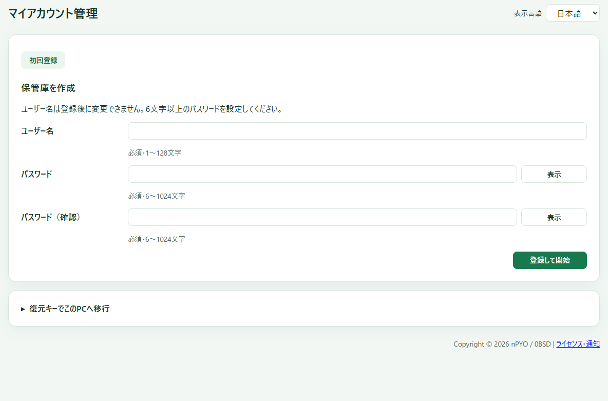
2復元キーのファイルを指定する
復元キーファイルの［ファイルの選択］を押し、発行済みの .nlvrecovery を選んで［開く］を押します。
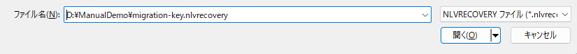
3選択したキーを確認する
選択した復元キーのファイル名を確認します。
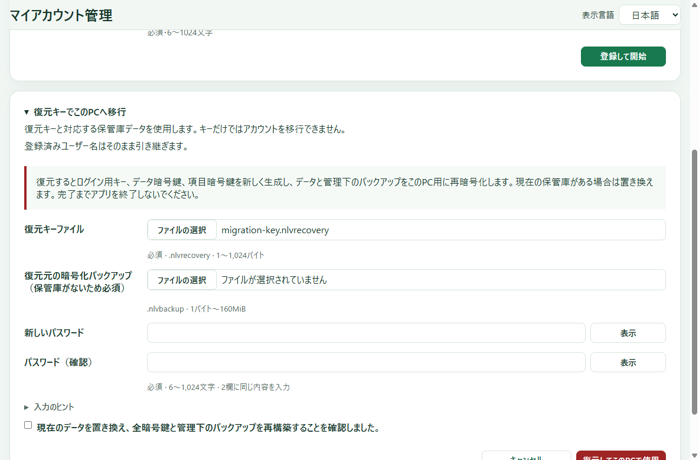
4バックアップファイルを指定する
復元元の暗号化バックアップの［ファイルの選択］で、対応する .nlvbackup を指定して［開く］を押します。
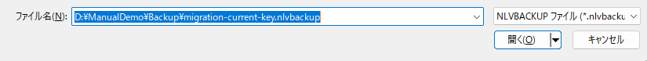
5選択したバックアップを確認する
キーとバックアップがどちらも選択されていることを確認します。
6新しいパスワードを入力する
新しいパスワードと確認欄に同じ内容を入力します。
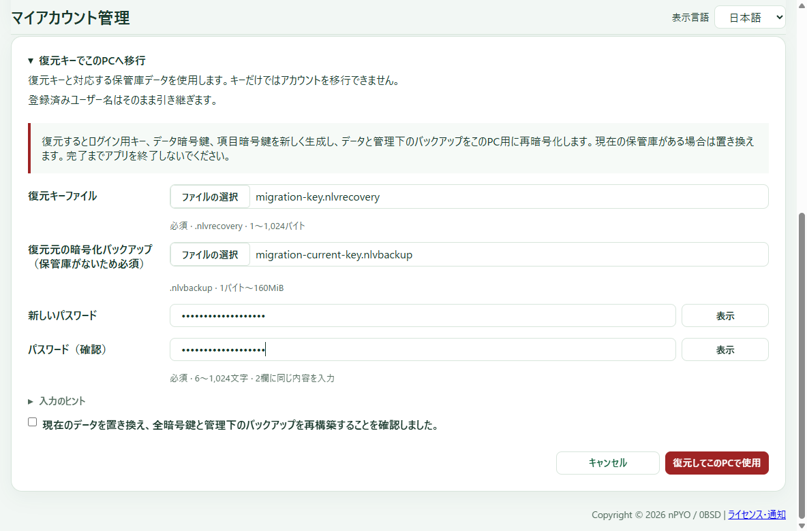
7置換・再構築を確認する
説明を確認してチェックを付け、［復元してこのPCで使用］を押します。完了までアプリを終了しないでください。
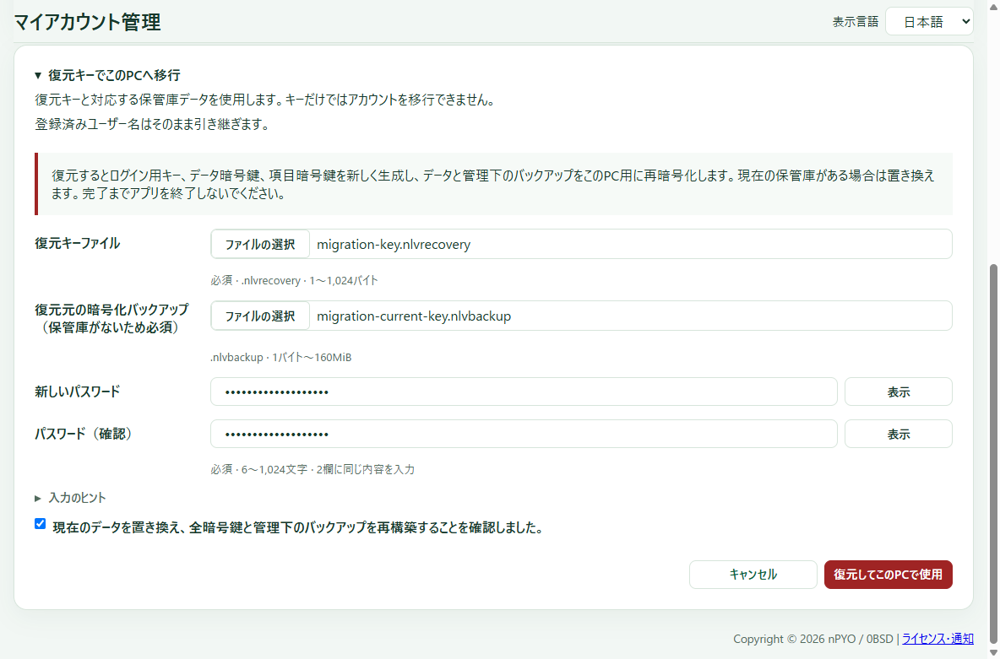
8復元完了を確認する
完了通知を確認します。移行後は新しい復元キーと手動バックアップを作り直します。
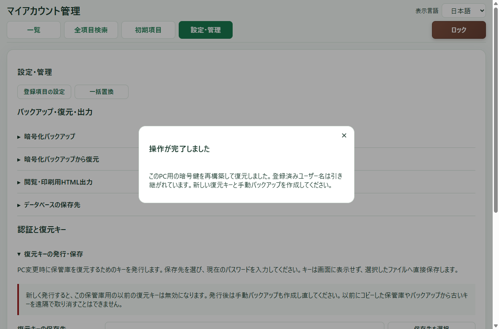
9引き継いだアカウントを確認する
通知を閉じて［一覧］を開き、移行元のアカウントを確認します。
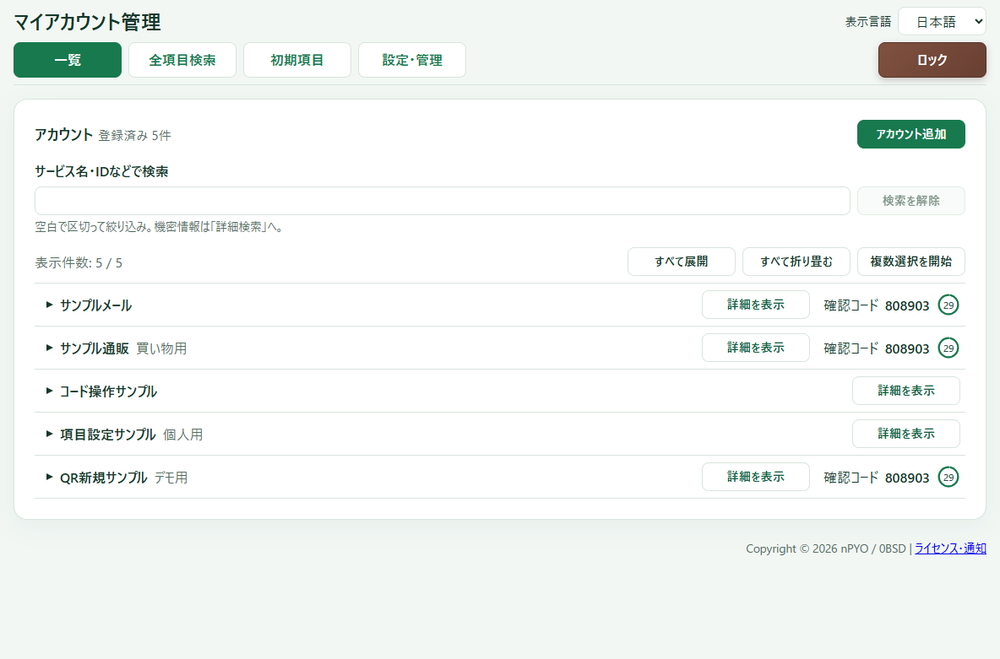
新しいパスワードと内容の確認
10利用後にロックする
［ロック］を押します。次回は引き継いだユーザー名と新しいパスワードで解除します。
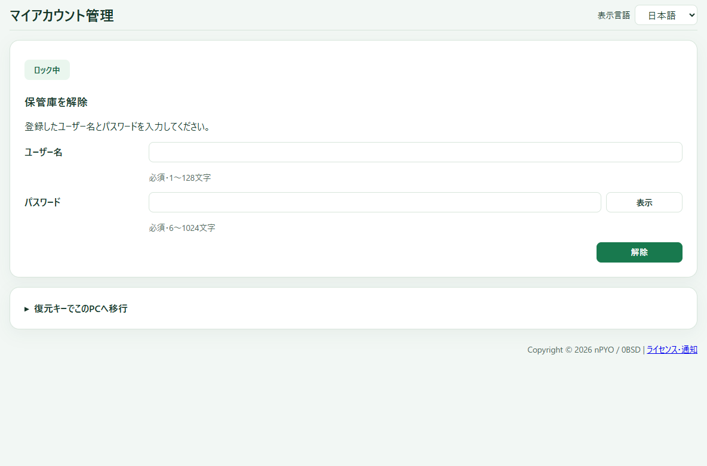
11新しいパスワードで解除する
引き継いだユーザー名と、移行時に設定した新しいパスワードを入力して［解除］を押します。
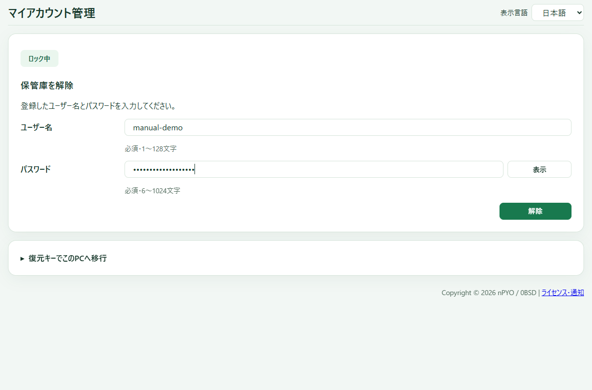
12一覧へ戻ることを確認する
移行したアカウントが再び一覧に表示されます。
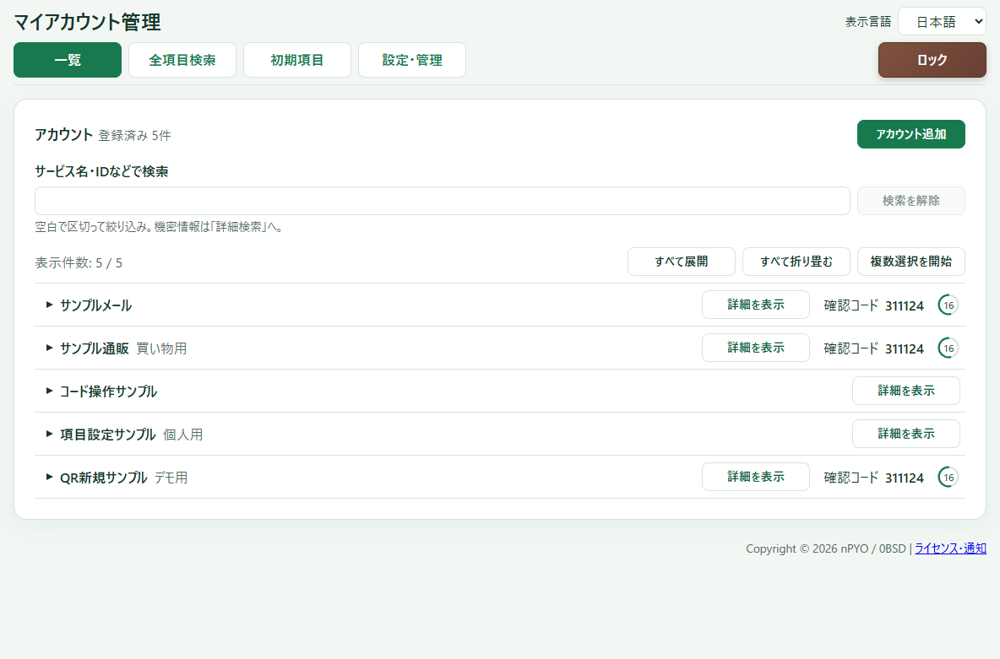
13登録内容を確認する
対象の［詳細を表示］を押し、TOTPなどの登録内容を確認します。
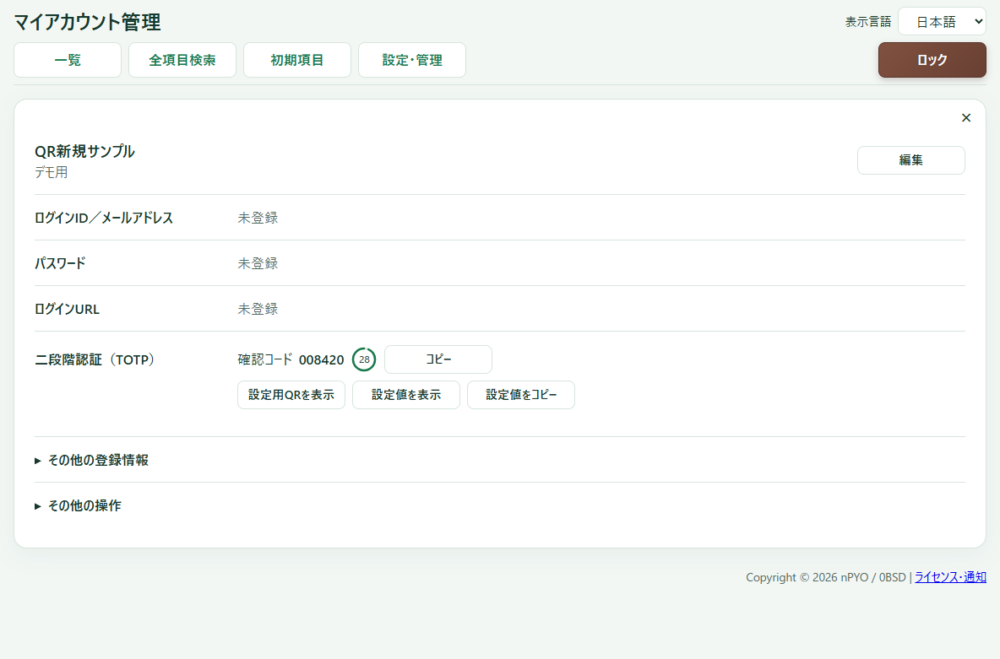
14追加した項目を開く
［その他の登録情報］を開きます。
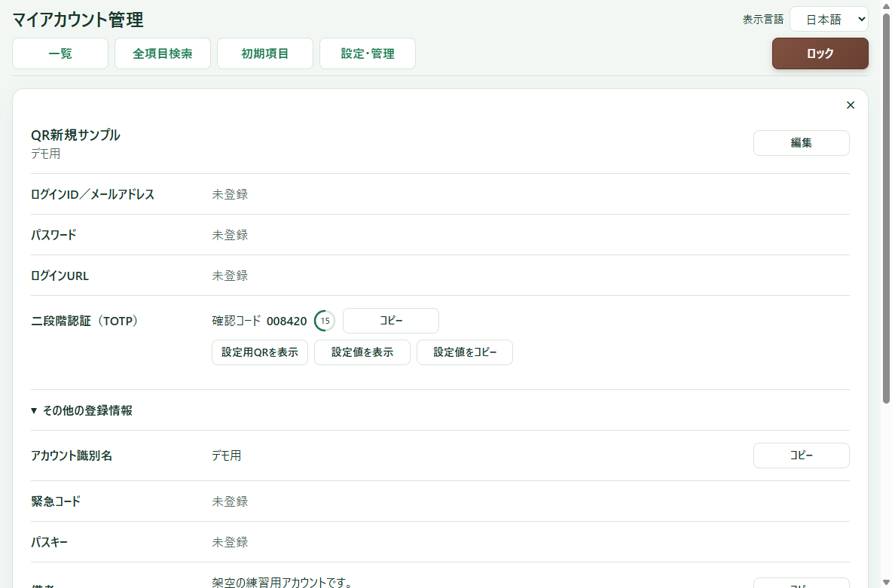
15保存値とマスク表示を確認する
下へスクロールし、備考・確認日・秘密情報を確認します。
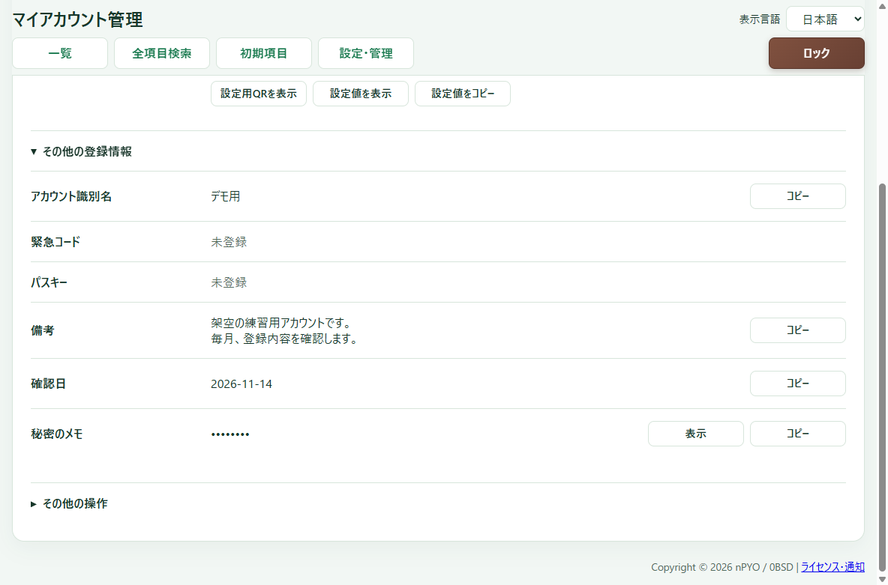
16必要な値を照合する
［表示］で内容を確認したら［隠す］へ戻します。画像は公開専用の架空文字列です。
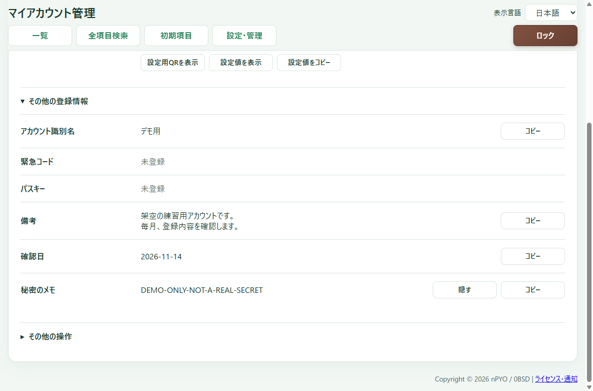